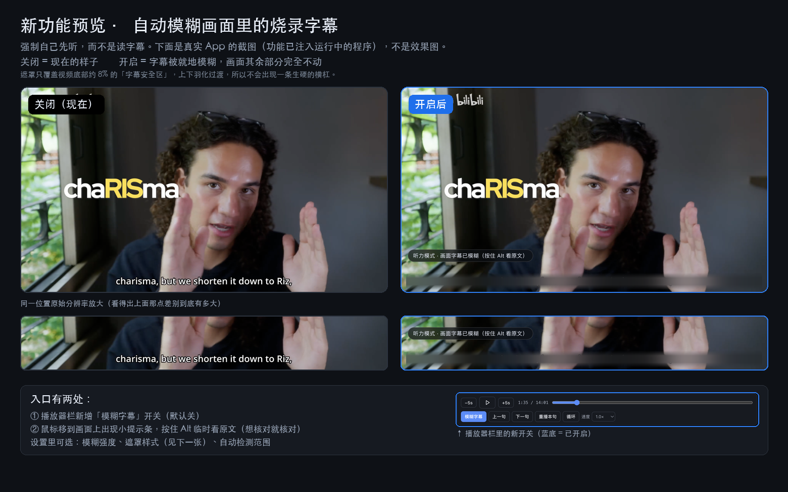
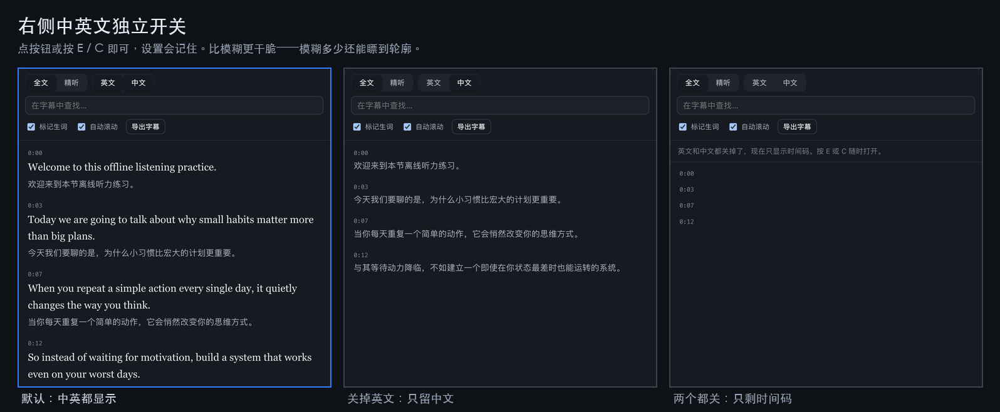
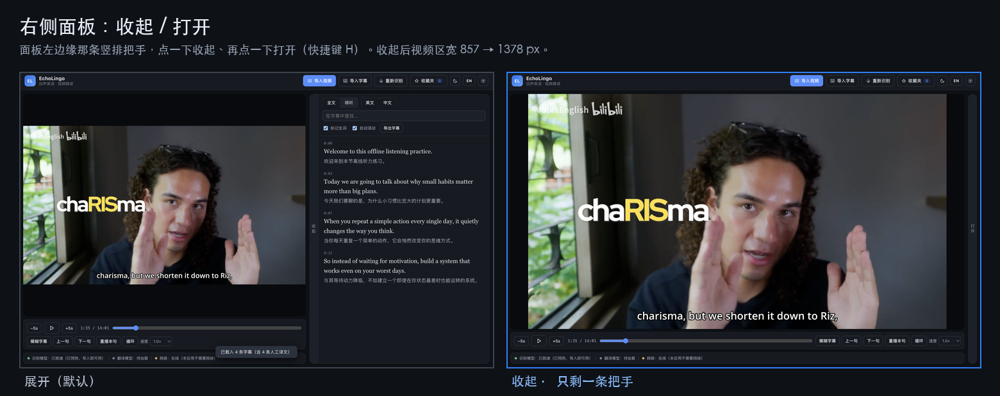
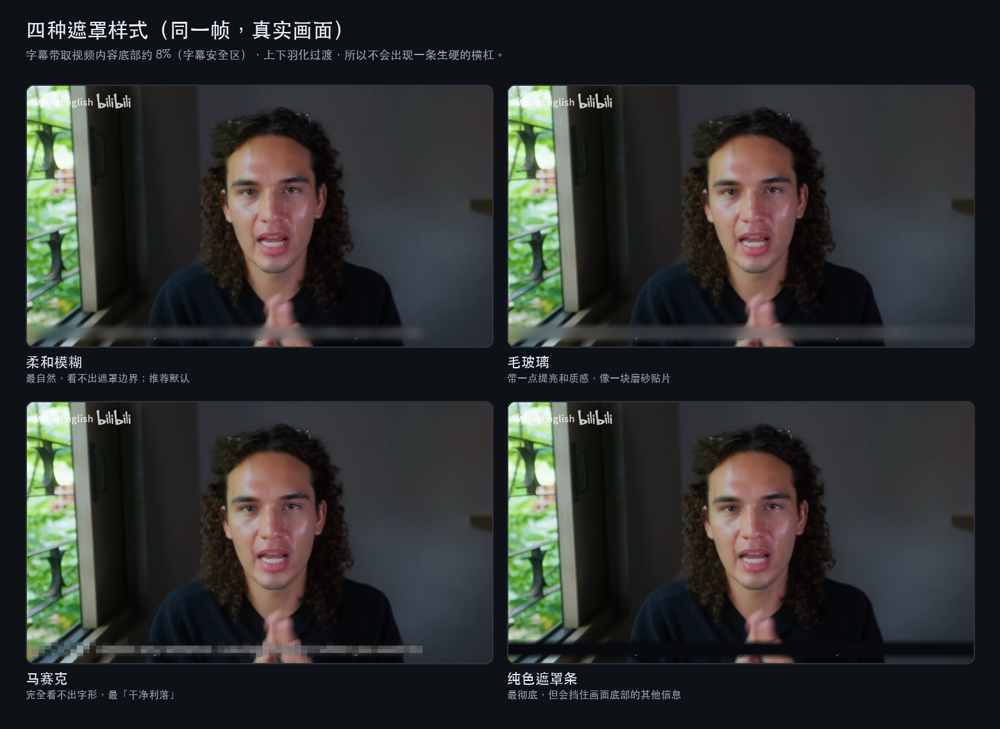
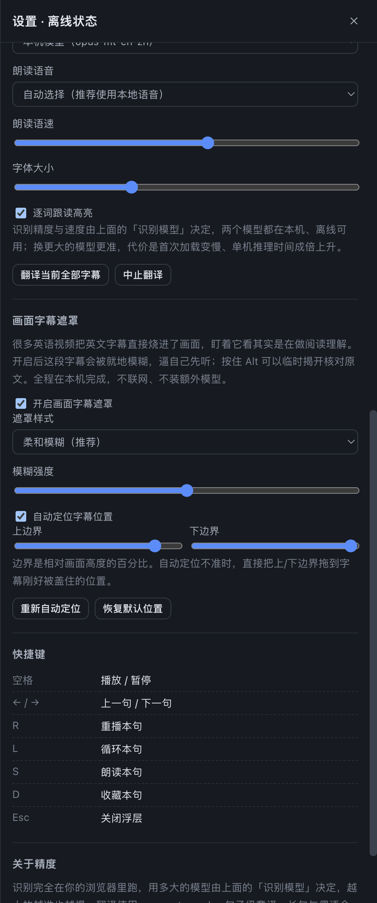

看英语视频，不用再盯着字幕
导入一段英语视频，自动识别每一句话，右侧英中对照、播放到哪个词哪个词就变浅绿； 点任意单词查释义与发音，整句可朗读可收藏。识别与翻译都在你自己的浏览器里跑，视频不出本机。
首次打开需下载识别与翻译模型（约 200 MB，只此一次），之后由浏览器缓存，拔网线也能继续用。

它解决的三个具体问题
不是又一个"播放器 + 字幕"，针对的是精读英语视频时真正卡住的地方。
画面字幕让你在阅读，不是听力
很多学习视频把英文字幕直接烧进了画面。眼睛盯着它，其实是在做阅读理解 —— 听力一点没练到。
烧录字幕就地模糊
只模糊画面底部那一条，人物、手势、上方的大字都不动。自动定位字幕位置，也可手动拖边界。
右侧译文也在剧透
就算画面字幕糊了，眼睛还是会往右边的英文原文瞟。
中英可分别收起
英文、中文两个开关独立控制（E / C）。整个字幕面板也能收成一条把手（H），视频直接占满屏。
云端识别意味着上传视频
大多数同类工具要把你的视频传到服务器上跑，慢、要排队，而且内容不再只属于你。
识别翻译全在本机
whisper + opus-mt 的量化模型跑在浏览器里，用 WebAssembly 多线程。视频从不离开你的电脑。
界面
深色 / 浅色两套配色，界面中英双语可切。下面是实拍，不是效果图。




快捷键
练听力时手不用离开键盘。
| 空格 | 播放 / 暂停 |
| ← → | 上一句 / 下一句 |
| R | 重播本句 |
| L | 循环本句 |
| S | 朗读本句 |
| D | 收藏本句 |
| E / C | 显示 / 隐藏右侧英文 / 中文 |
| H | 收起 / 展开右侧字幕面板 |
| Alt | 临时显示被模糊的画面字幕原文 |
| Esc | 关闭浮层 |
关于"离线"，如实说明
不想用一句"完全离线"糊过去，边界说清楚比较好。
首次访问需要联网一次
识别模型（Whisper Base 约 80 MB / Tiny 约 44 MB）与翻译模型（约 120 MB）要下载一次。之后由 Service Worker 缓存，再打开就是断网可用。
之后就不再需要网络
识别、翻译、词典查询、语音合成全部在本机完成。没有任何服务器参与，也没有任何数据上传 —— 你可以在加载完之后直接拔掉网线验证。
视频从不离开本机
视频用 blob: URL 加载，只存在于当前页面内存里。页面关闭即释放，不会被写入任何服务器或云盘。
想要彻底的离线体验
把它打包成 macOS 应用：模型随包带着，连"首次下载"这一步都省了，双击即是完整功能。
打包成 macOS 应用
自包含的 .app（约 553 MB，其中模型 237 MB），模型内置，双击即用。
# 需要 node，以及 macOS 自带的 ditto / plutil / codesign git clone https://github.com/KJHAJKSLFHA/echolingo cd echolingo/desktop node build.mjs # → ../dist/EchoLingo.app open ../dist/EchoLingo.app
- 打包脚本零依赖：自己下 Electron 的 zip、用
ditto解压、手工组装 bundle、codesignad-hoc 重签。 - 首次构建会下载 Electron（124 MB，镜像优先），之后重建是秒级。
- Apple Silicon 上 ad-hoc 重签不能省 —— 签名无效的 arm64 应用会被系统拒绝启动。
- 没有 Apple 开发者签名，首次打开若被拦：右键 →「打开」，或
xattr -dr com.apple.quarantine /Applications/EchoLingo.app。
技术上的几个关键选择
如果你也打算做类似的东西，这几条能帮你少踩坑。
必须有 COOP / COEP 响应头
onnxruntime 的 wasm 后端要开多线程就得有 SharedArrayBuffer，而浏览器只在 crossOriginIsolated 时放开它 —— 条件正是这两个响应头。少了不会报错，只会悄悄退化成单线程。
多会话并行，而不是单会话多线程
一段音频不管多长都要付一次约 1.6 秒的"30 秒窗口"编码器固定开销，加线程救不了它。把切好的段分给多个 Worker 同时跑才是正解，而且不改变拼接结果，准确度零损失。
字幕遮罩用 backdrop-filter
盖一个空 div 让合成器去模糊背后的像素，不复制视频帧、不逐帧重绘。只有马赛克样式需要退回 canvas。
逐词时间戳只贵 13%
实测 'word' 比不带时间戳贵约 13%，而句子边界和跟读高亮都依赖它。有些环境下 return_timestamps: true 对从中间切出的段会返回空文本 —— 这个坑很深。
每一段音频必须短于 30 秒
whisper 的特征提取器窗口固定 30 秒，超出的部分是静默裁掉的，不报错也不自动分块。表现就是「少句子、上下文接不上」。
词典也要能离线
ECDICT 按首字母切成 27 个分片，查到哪个词才加载哪个分片，34000 词条不会一次性拖进来。